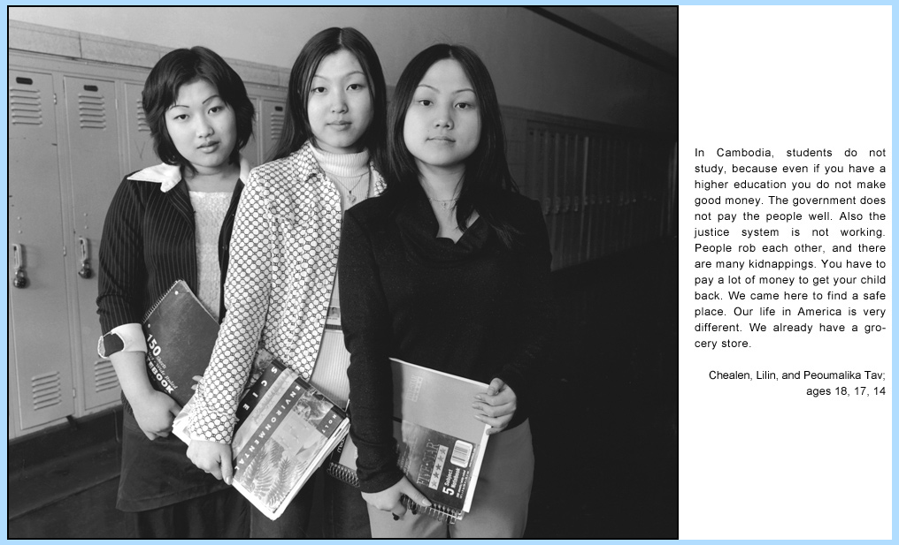
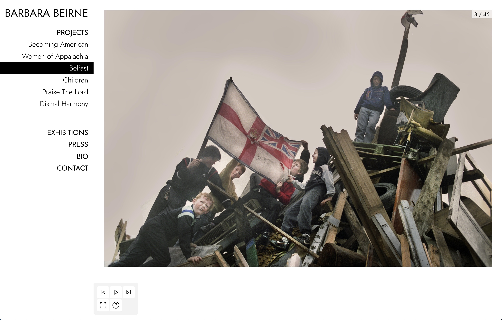

Portfolio Design and Development
Barbara Beirne was a prolific New York photographer during the 1980s. Most of her archives were encapsulated in a Flash website, and neither the source files nor the original developer were available. I was approached to retrieve the images from the defunct Flash website and use those images to revamp Barbara Beirne's photography showcase.
The process of reverse engineering a binary .SWF file is called “decompiling,” and there are several tools available, both free and paid. I discovered that there is an active "Flash Decompiler Scene," and I used FFDec for the job. Although FFDec is cumbersome to install, the software successfully extracted the images from the .SWF provided. Image extracted by FFDec from a .SWF file
Since future compatibility was a concern, features such as the full-screen image carousel were built using Vanilla JavaScript. Keyboard navigation was also implemented for both accessibility and ease of use.
Barbara's images carry a lot of weight. We decided that a minimal, stark design would frame her work best. 
Kind words from the client after project delivery:
"Daniel is exceptional. He was charged with recreating a photo website built initially in Flash that had long been non-functional. Daniel came up with suggestions and solutions that were beyond what the original site had and brought it all to life. The site is responsive and works seamlessly on all platforms and browsers. Most importantly, Daniel is truly a pleasure to work with. He is a great communicator, delivers on time, is a perfectionist -- in the best sense of the word - and is thoughtful and considerate. I had no references to go by when we hired Daniel and couldn't be more pleased with his work."
Alison Cornyn
Artist + Co-Founder and Creative Director Picture Projects
June 13, 2023